Sage green bedrooms have a way of making a room feel instantly calmer without turning it into a botanical garden. I've used sage green in bedroom palettes many times, and I especially like it when someone wants color without the intensity of navy, emerald, or deep charcoal. The trick comes down to choosing the right undertone and pairing it with materials that keep the room warm.
If you're wondering whether sage green actually works in a bedroom, what colors pair with it, or how to use it without making the room feel too green, you're in the right place. These 25 sage green bedroom ideas cover everything from full wall color to small accents, bedding, furniture, and those little details that make a room feel finished.
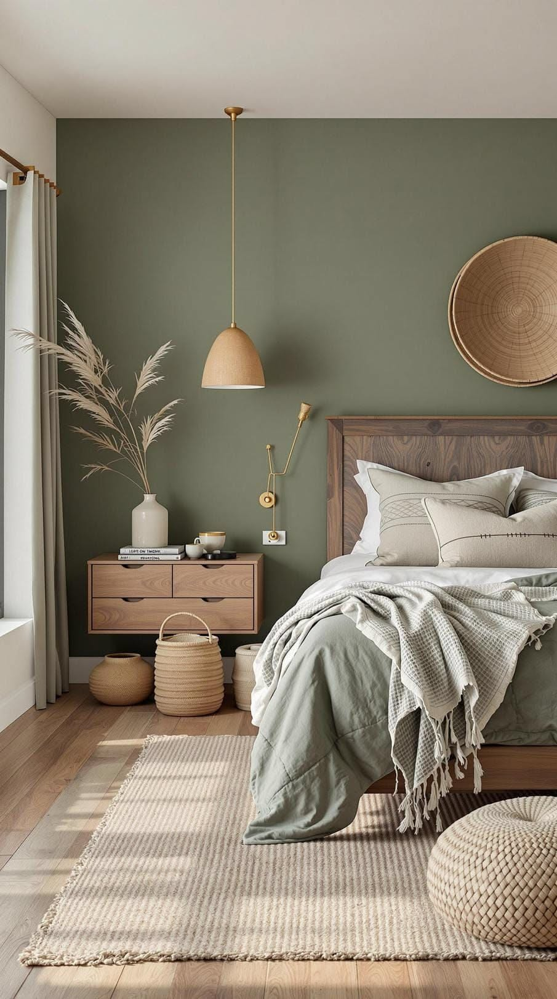
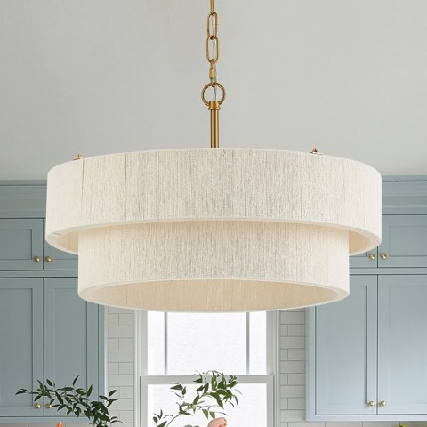
20”Hand Woven Rattan Chandelier Boho Pendant Light Adjustable Coastal Pendant Light for Kitchen Island Dining Living Room, White, UL Listed
Shop on Amazon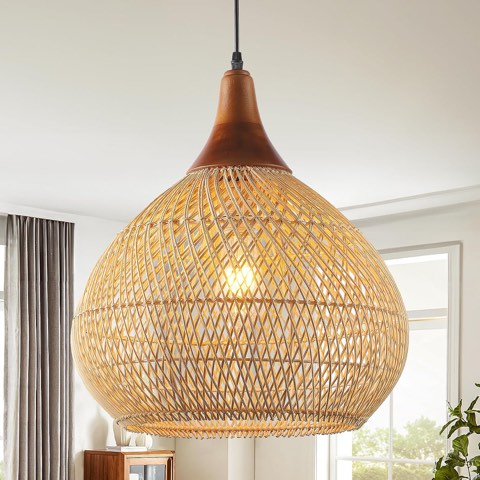
Rattan Pendant Light, 15.7" Rattan Chandelier Hand-Woven Boho Pendant Light Fixtures with Solid Wood, Basket Wicker Chandelier for Dining Room Kitchen Island Living Room
Shop on AmazonHow to Make a Sage Green Bedroom Feel Expensive
You don't need expensive furniture to make sage green look sophisticated.
Focus on texture, contrast, and consistency instead of chasing pricier pieces.
Layer linen bedding with a chunky throw. Add a substantial rug under the bed. Use warm wood or aged brass instead of introducing ten different finishes.
Then repeat your main colors around the room. For example, if you choose sage walls, cream bedding, and walnut furniture, echo those colors through artwork, curtains, pillows, and accessories. The repetition creates cohesion without making everything match perfectly.
And please don't forget lighting. Warm bedside lamps can completely change the atmosphere of a sage bedroom after sunset. I prefer multiple smaller light sources over one brutally bright ceiling fixture. Your bedroom should help you wind down, not interrogate you.
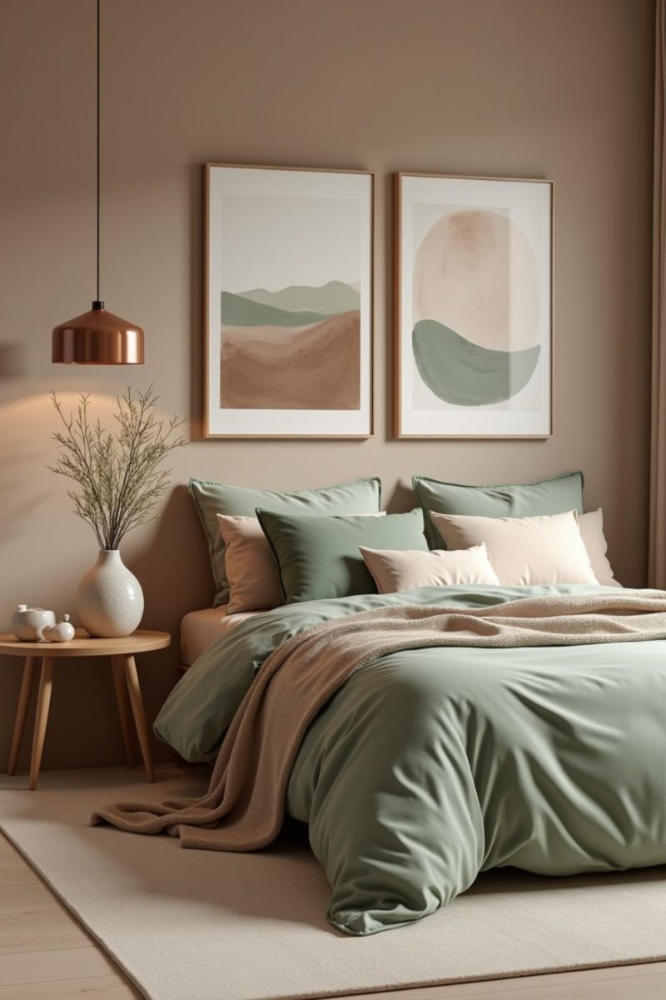
Sage Green Bedroom Paint Colors Worth Considering
If you want to start with actual paint colors, several established brands offer sage and green options designed with bedrooms in mind.
Benjamin Moore currently offers October Mist 1495, Saybrook Sage HC-114, Gloucester Sage HC-100, and Sage Wisdom CSP-775 among its sage and green selections.
Sherwin-Williams also features green bedroom options such as Sea Salt SW 6204, Acacia Haze SW 9132, and Willowleaf, depending on the mood and palette you want to build.
One of the newer shades, Halcyon Green, gets described as a misty green with a subtle blue-gray undertone, meant for a genuinely restorative retreat, the kind of color that leans into the calm, cool, collected elements of everyday living rather than demanding attention.
That idea captures something important about choosing bedroom green. You don't need the brightest or most dramatic shade to make an impression. Sometimes the quiet colors do more work.
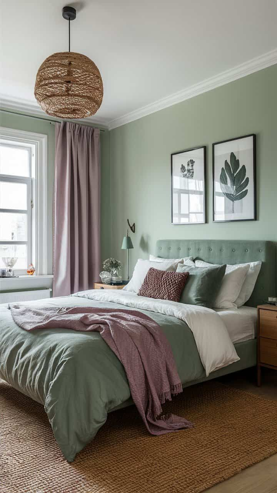
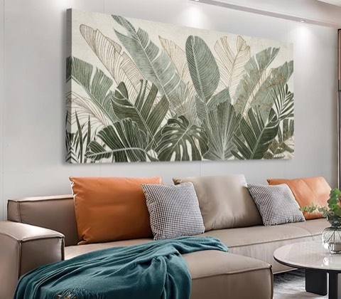
tigeridge Tropical Plants Wall Art - Green Leaf Canvas Art Wall Pictures Living Room Decor, Banana Leaves Line Art, Taupe Green Wall Decor Nature Botanical Painting Prints Artwork, 20" x 40"
Shop on AmazonHow to Choose the Right Sage Green for Your Bedroom
The biggest mistake I see involves choosing a sage color from a tiny digital swatch and assuming it will look identical on the wall.
Paint reacts strongly to lighting, surrounding colors, flooring, and furniture.
Before committing, check:
- Natural light: morning and afternoon light can change the appearance dramatically
- Undertones: some sages lean gray, blue, yellow, or olive
- Furniture: warm wood can make a cool sage appear warmer
- Artificial lighting: warm bulbs can shift green toward yellow
- Room size: deeper greens can make a bedroom feel more intimate
It's worth sampling green directly on your actual walls and observing it at different times of day, since lighting can change how the color appears more than most people expect going in.
I always recommend doing this before buying the full amount of paint. A sample costs a little money. Repainting an entire bedroom costs considerably more, both financially and emotionally.
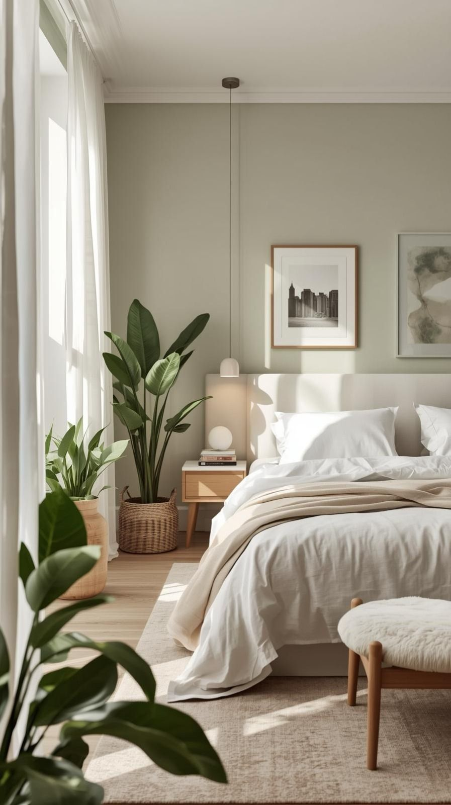
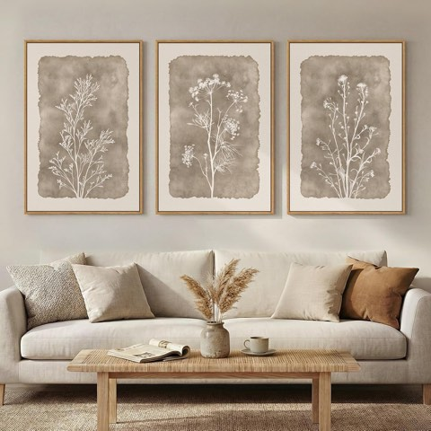
3 Piece Framed Neutral Botanical Floral Wall Art for Living Room, 16x24 In
Shop on Amazon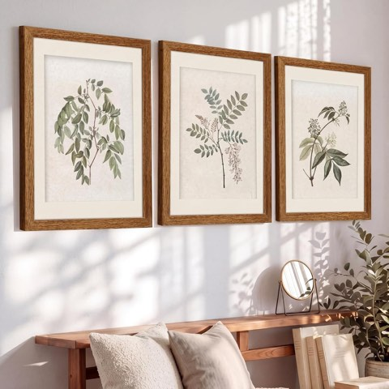
Unittype 3 Pcs Sage Green Plant Canvas Painting Framed Botanical Wall Art
Shop on Amazon25 Sage Green Bedroom Ideas
1. Layer Several Shades of Sage Green
This might be my favorite approach of the whole list.
Instead of choosing one sage shade and repeating it everywhere, use several variations throughout the bedroom.
For example:
- Pale sage walls
- Medium sage bedding
- Deeper green pillows
- Olive artwork
- Natural wood furniture
Layering similar greens creates depth without forcing you to introduce lots of unrelated colors into the mix.
There's a wide range of sage shades out there, from pale options like October Mist to deeper choices like Gloucester Sage, which shows just how much range actually exists within the sage family alone.
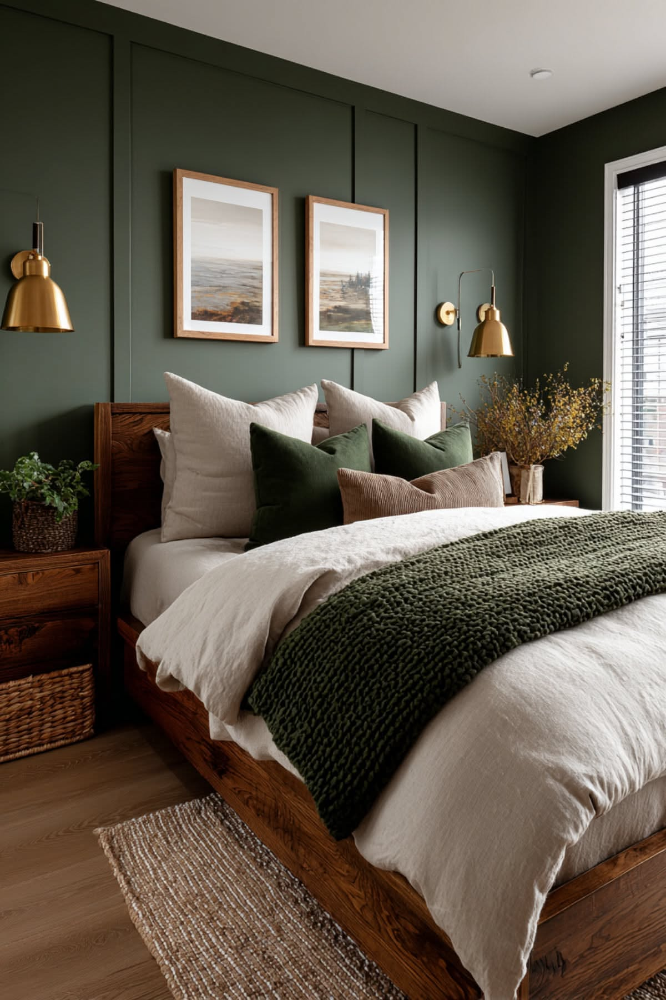
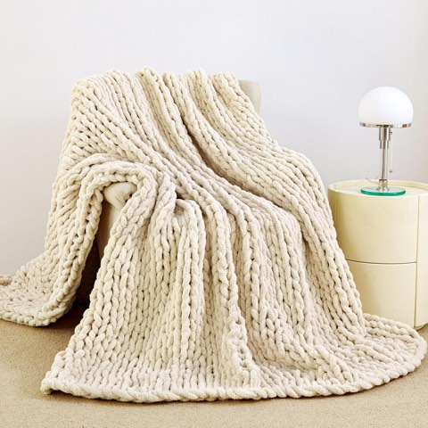
Chunky Knit Blanket Throw for Couch, 51" x 63" Chunky Yarn Knitted Blankets
Shop on Amazon2. Combine Sage Green With Soft Pink
Sage and dusty pink create a surprisingly sophisticated pairing.
Avoid bright bubblegum pink and choose muted blush, dusty rose, or clay pink instead. These warmer tones soften sage without turning the bedroom sugary.
I particularly like this combination with cream bedding and natural wood.
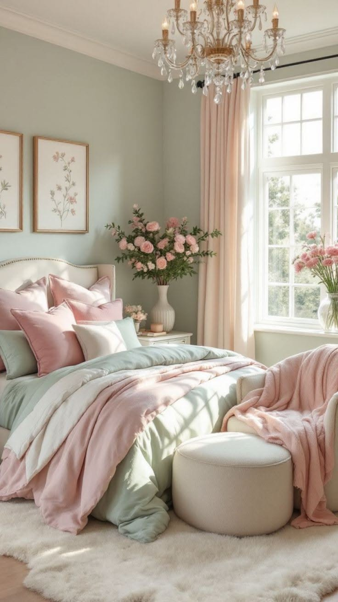
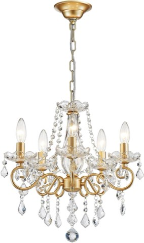
ANJIADENGSHI Mini Crystal Chandelier K9 Crystal Gold Chandelier for Living Room Bedroom Dining Room Kitchen Island Entryway, 5 E12 Bulbs, Golden
Shop on Amazon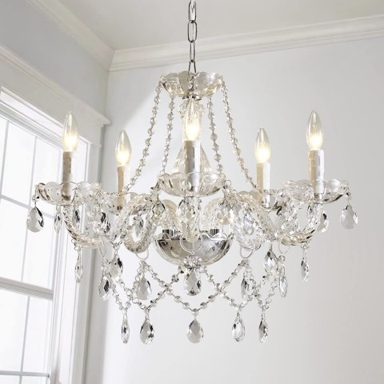
Saint Mossi Modern Contemporary Elegant K9 Crystal Glass Chandelier Pendant Ceiling Lighting Fixture - 5 Lights
Shop on Amazon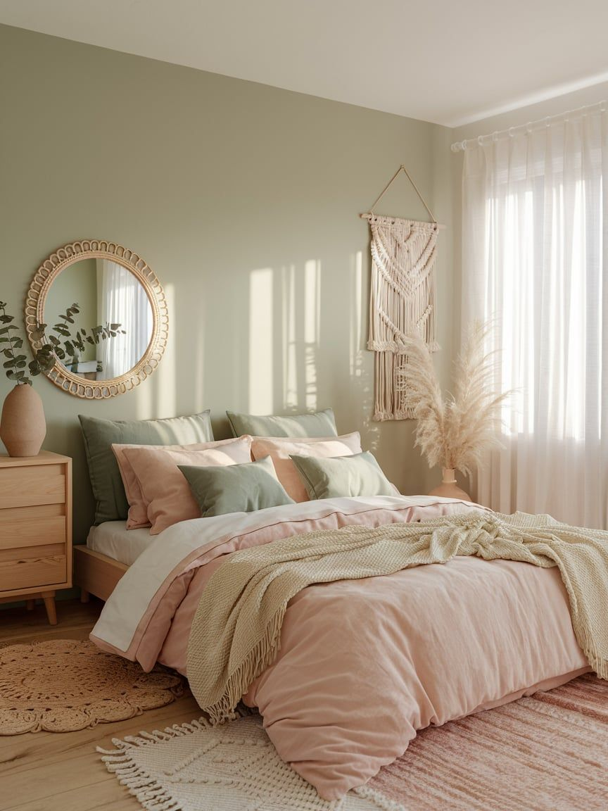
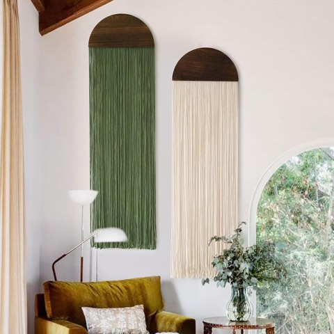
2Pcs Macrame Wall Hanging Boho Decor Yarn Handmade Round Tassel 13.7" W x 51" L
Shop on Amazon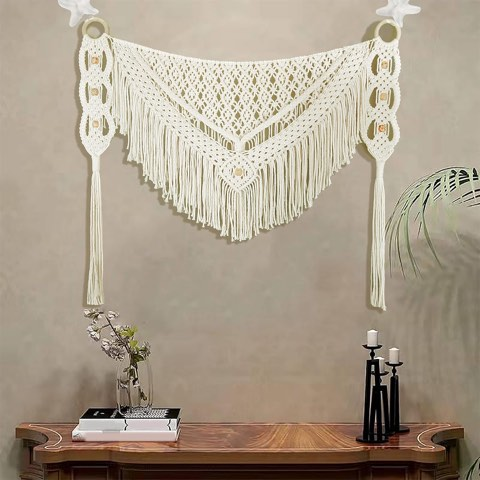
kiido Large Macrame Wall Hanging Boho Tapestry Curtain Fringe Woven Bohemian Wall Decor Home Decoration for Apartment Bedroom Living Room, Blossom 35.4" W x 26" H
Shop on Amazon3. Add Sage Green Through Artwork
Maybe you like sage but don't want it anywhere near your actual walls.
Use artwork with sage, olive, cream, beige, and muted blue tones instead. Hang one large piece above the bed or create a small gallery wall.
This method lets you experiment with the color without ever committing to paint.
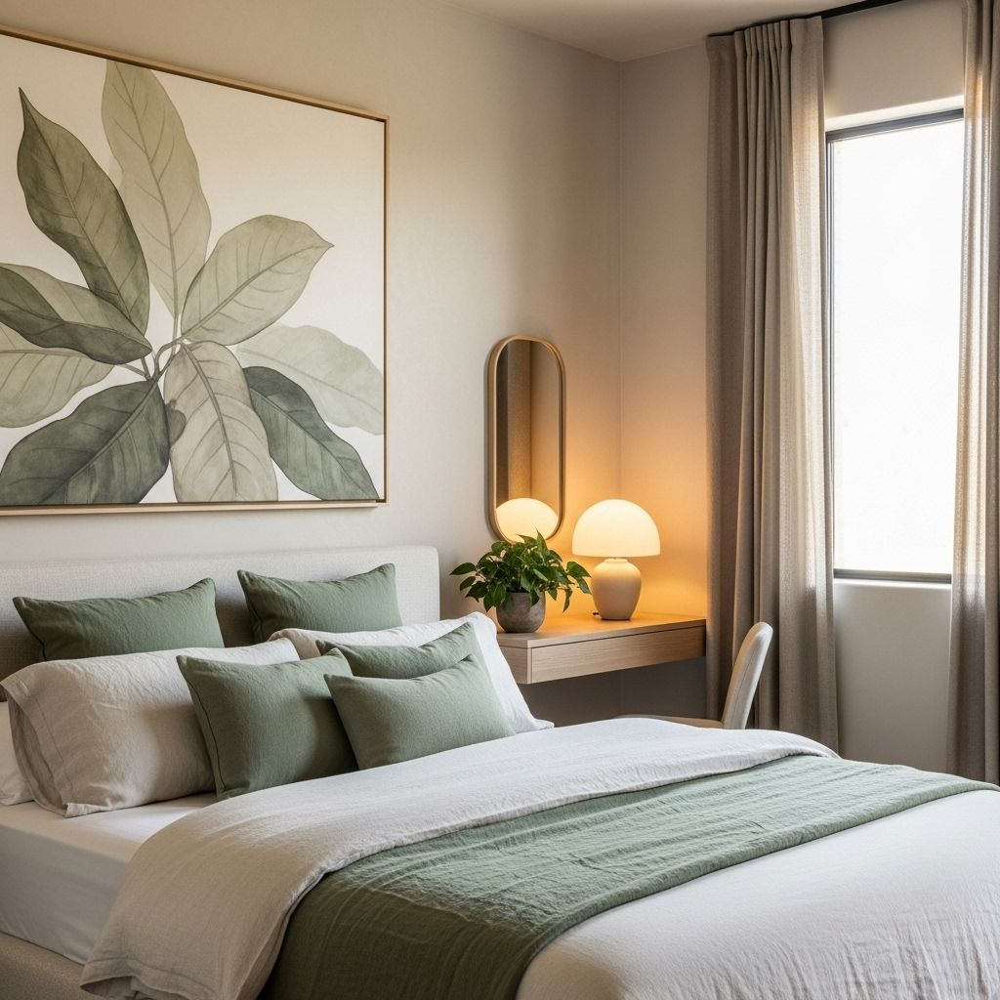
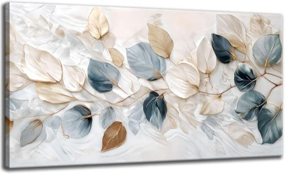
Large Living Eucalyptus Leaf Canvas Wall Art, Teal White Botanical Abstract Decor Painting, Modern Nordic Plant Flowers Posters Prints for Bathroom Bedroom Office Hallway Home Decoration
Shop on Amazon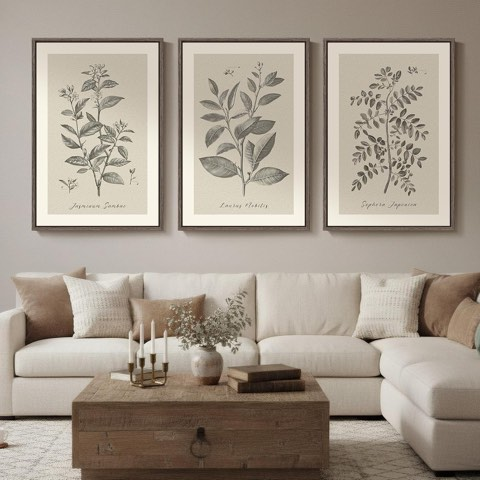
Large Framed 3 Piece Vintage Botanical Wall Art for Living Room, 24x36 In
Shop on Amazon4. Create a Sage Green Japandi Bedroom
Sage works beautifully with Japandi-inspired interiors because both styles favor simplicity and natural materials.
Use:
- Muted sage walls
- Low-profile furniture
- Light oak
- Cream textiles
- Simple ceramics
- Minimal artwork
Keep the color palette restrained. The beauty comes from texture and proportion rather than decoration piled on top.
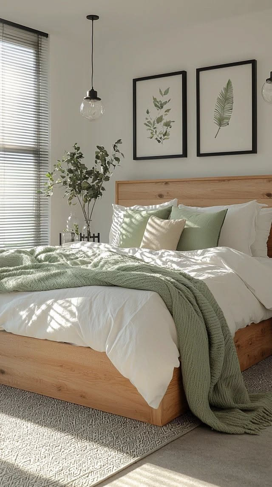
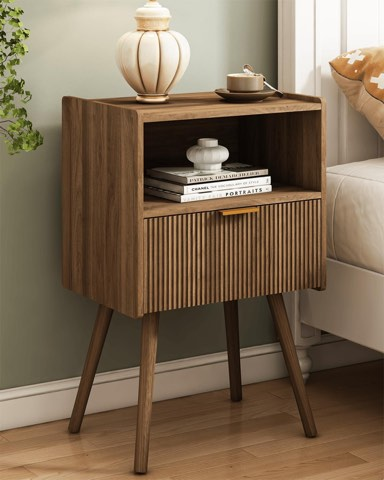
JOONEE Nightstand, Modern Bedside Table with Storage Drawer and Open Wood Shelf, for Living Room, Bedroom and Small Spaces, Accent Night Stand with Solid Wood Legs, Walnut Brown
Shop on Amazon5. Use Sage Green in a Small Bedroom
Small bedrooms don't automatically require white walls.
A light sage green bedroom can add personality while keeping the space visually soft. Choose a muted shade with a lighter value and pair it with light bedding and minimal furniture.
Soft greens in general can add real personality to a small bedroom without ever overwhelming the space.
I'd also avoid filling every available surface with decor. Small room plus excessive accessories equals visual traffic jam.
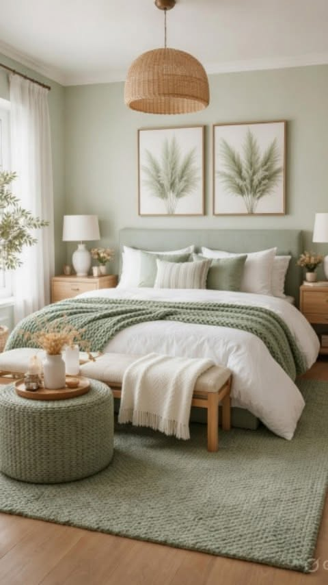
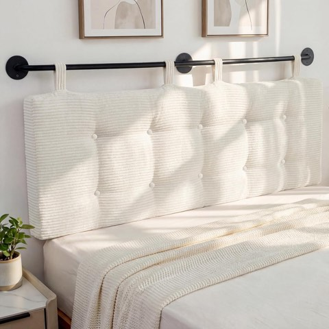
HIGOGOGO Wall Mounted Headboards for Queen Size Bed, Hanging Head Board Wall with Button Tufting, Adjustable Height Headboard for Bedroom, Beige
Shop on Amazon6. Try Sage Green With Dark Wood
For a richer bedroom, combine sage with walnut or espresso-toned wood.
The dark wood gives the green more depth while the muted wall color prevents the furniture from feeling too heavy.
Add cream or oatmeal textiles to keep everything balanced. This combination also works beautifully in traditional and transitional bedrooms.
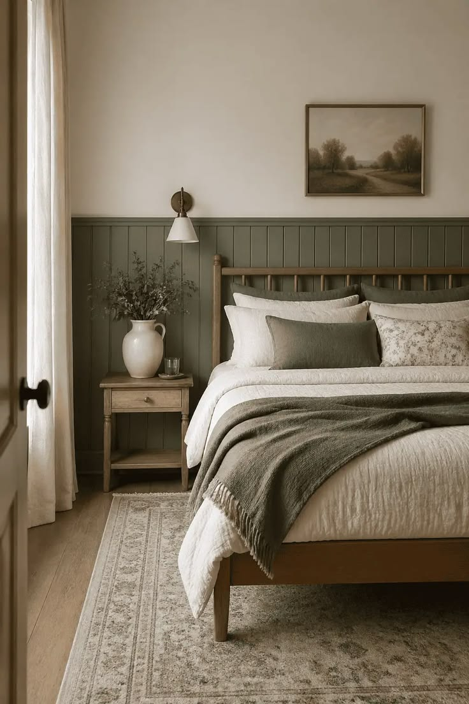
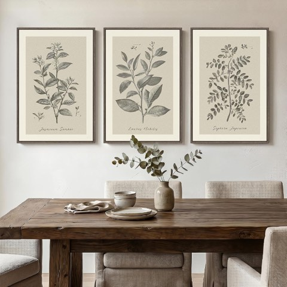
Framed 3 Piece Neutral Vintage Botanical Wall Art for Dining Room, 16x24 In
Shop on Amazon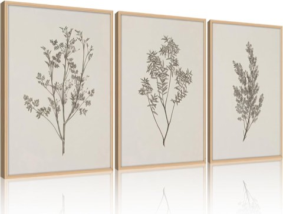
Botanical Wall Art Set of 3 Framed, Minimalist Neutral Plant Canvas Print
Shop on Amazon7. Add Rattan and Woven Textures
Sage green can sometimes look too smooth if you surround it with only painted furniture.
Bring in rattan, cane, jute, seagrass, and woven textiles instead. These materials add tactile contrast and reinforce the natural character of the color.
A sage wall, cane headboard, jute rug, and linen bedding create a relaxed bedroom almost effortlessly.
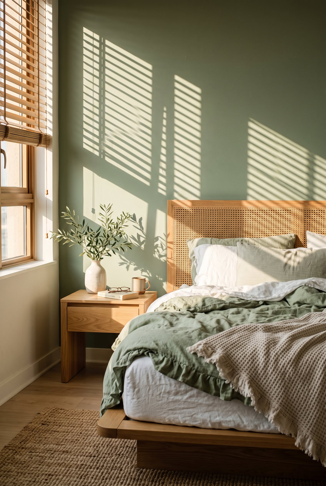
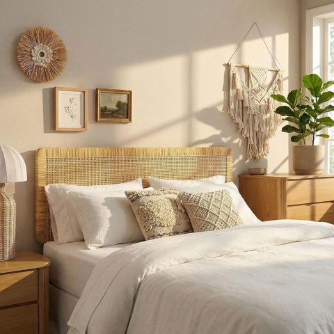
Modway Sandy Queen Size Wood and Rattan Wall Mounted Headboard in Natural Rattan – Floating Wood Headboard with Woven Rattan for Queen Beds
Shop on Amazon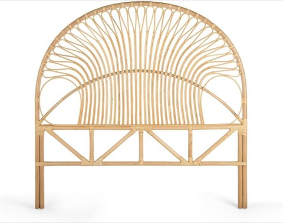
Kouboo Rattan Loop Headboard Queen Size, Natural Wicker Bedroom Bed Decor
Shop on Amazon8. Pair Sage Green With Brass
Sage green and brass create an elegant combination without feeling too formal.
Use brass through:
- Bedside lamps
- Drawer hardware
- Mirrors
- Light fixtures
- Picture frames
Choose aged or brushed brass if you want a softer appearance. Polished brass creates more contrast and feels a little more glamorous.
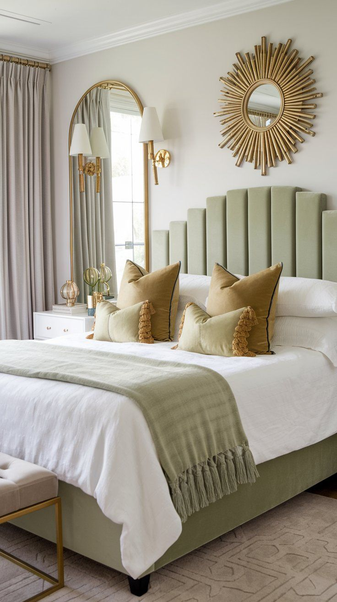
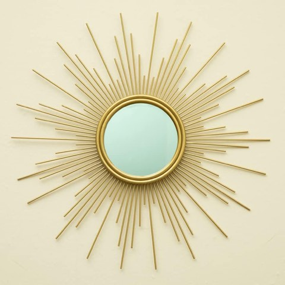
24'' Gold Sunburst Wall Mirror Boho Home Decor Modern Round Hanging Wall Art for Living Room/Bedroom/Bathroom/Entryway
Shop on Amazon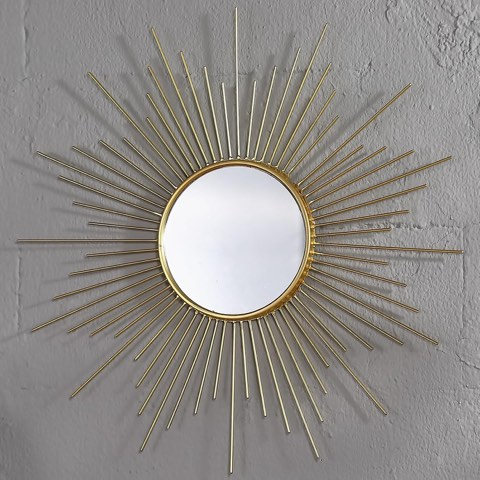
24'' Large Gold Sunburst Mirror, Metal Starburst Mirrors, Mid-Century Modern Sun Mirror Wall Decor for Living Room, Bedroom, Bathroom, Hallway, and Entryway
Shop on Amazon9. Paint the Ceiling Sage Green
Ready to do something a little unexpected with the room?
Paint the ceiling the same sage green as the walls.
This technique creates a cocoon-like effect and makes the room feel more immersive. I'd pair it with simple trim and plenty of warm lighting.
For an easier version, paint only the ceiling sage while keeping the walls warm white instead.
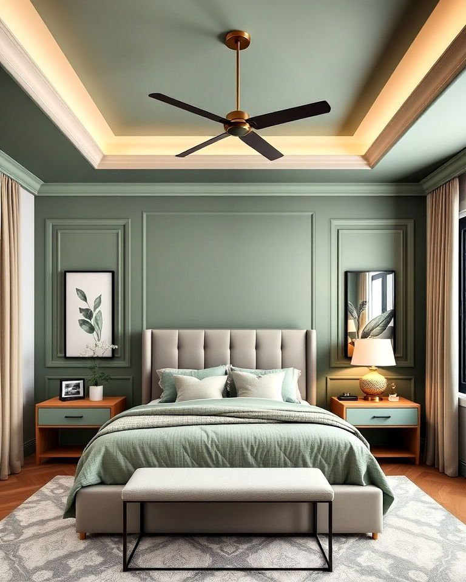
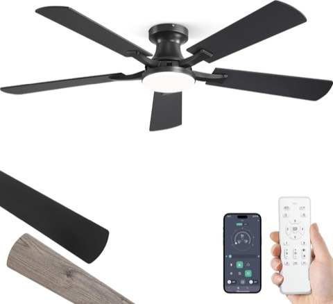
ZMISHIBO 52 Inch Ceiling Fans with Lights, Remote & App Control, Flush Mount
Shop on Amazon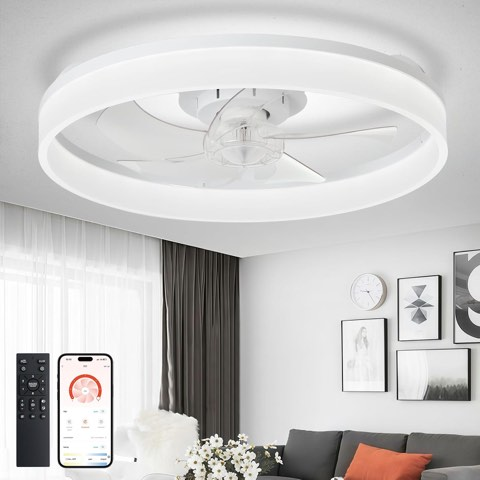
DLLT Modern Ceiling Fans with Lights: 20" Full Package Low Profile Ceiling Fan with App Remote Control, White Flush Mount LED Bladeless Fandelier, Dimmable Quiet DC Motor for Bedroom Living Room
Shop on Amazon10. Create a Moody Sage Green Bedroom
Sage doesn't always have to look light and airy.
Choose a deeper, gray-green shade and pair it with walnut furniture, cream bedding, and warm lighting. The result feels moody, intimate, and sophisticated.
Deeper greens in general tend to get recommended as a reliable option for adding richness and depth to a bedroom.
This idea works especially well in bedrooms with limited natural light, because you can lean into the cozy feeling rather than fighting it.
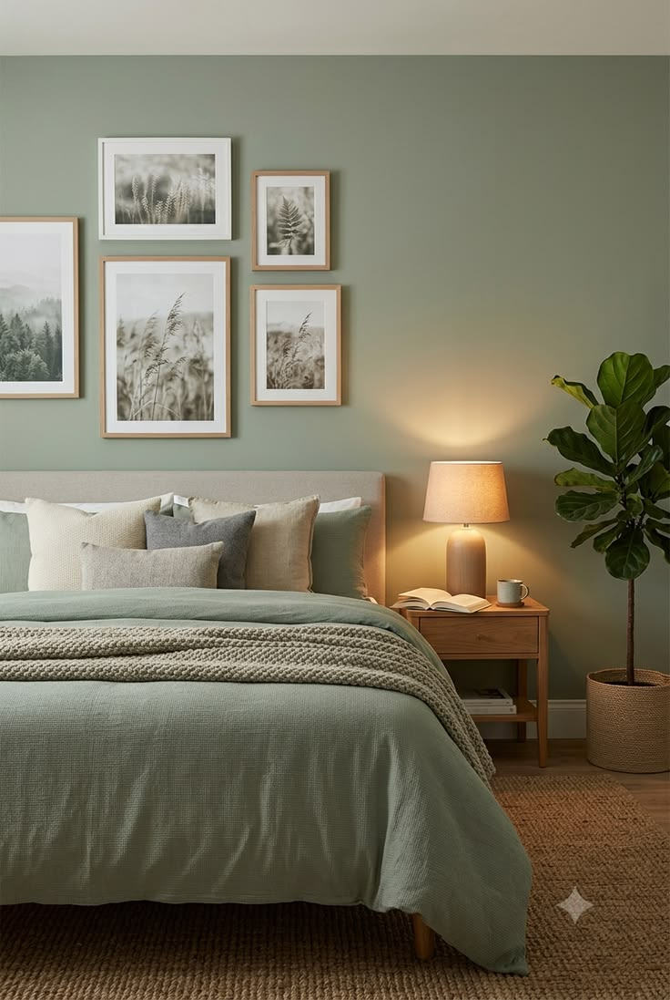
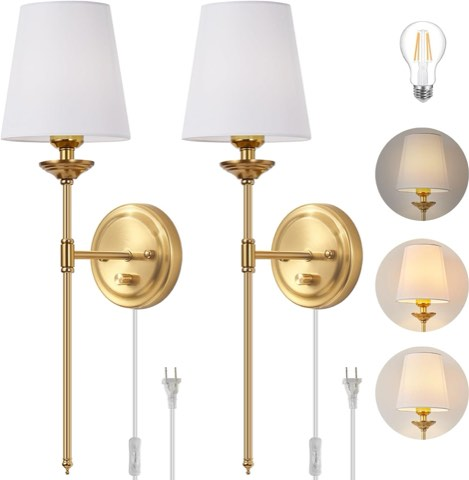
Dimmable Plug in Wall Sconces Set of 2, Gold Bedside Wall Lamp with Knob Dimmer Switch and 6.5FT Electric Cord, Mid Century Modern Wall Light Fixture for Bedroom Living Room
Shop on Amazon11. Use Sage Green Curtains
Sage curtains can soften a bedroom while introducing color right at eye level.
Choose a fabric that complements the wall color rather than matching it perfectly. Slight variations in tone create a more layered look.
If your walls already feature sage, try a lighter sage curtain. If your walls remain neutral, you can go slightly deeper instead.
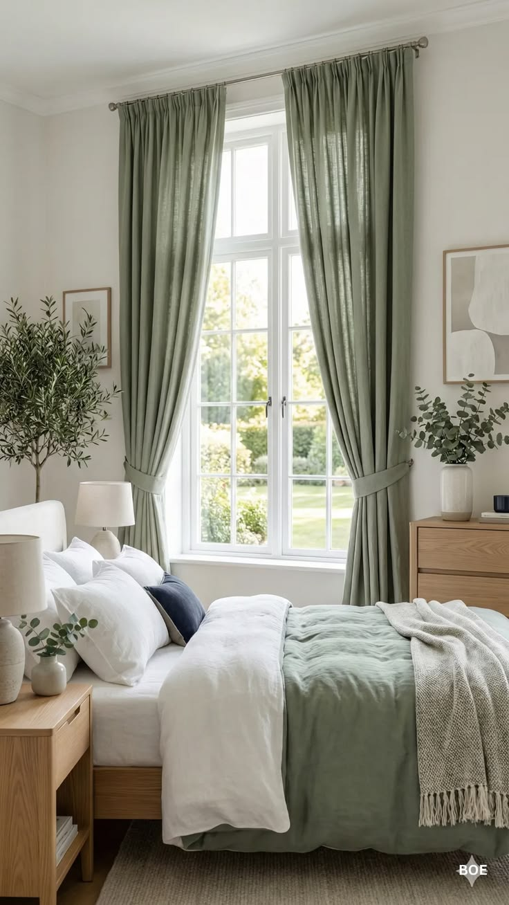
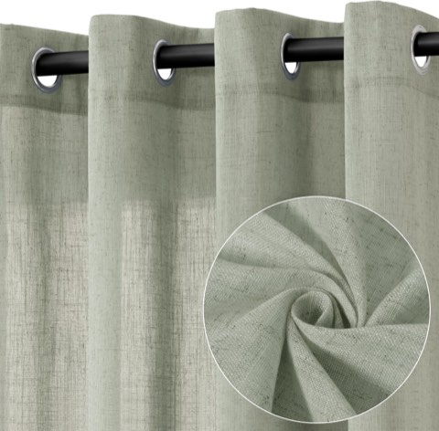
Jowels Sage Green Linen Grommet Curtains 84 Inch Length for Living Room
Shop on Amazon12. Add a Sage Green Upholstered Headboard
You can introduce a substantial amount of green without painting a single wall.
A sage upholstered headboard gives the bed a strong visual anchor. Linen, boucle, cotton, and velvet can all work depending on your decorating style.
For a relaxed bedroom, I'd choose linen or textured cotton. Velvet gives the same color a much more dramatic personality.
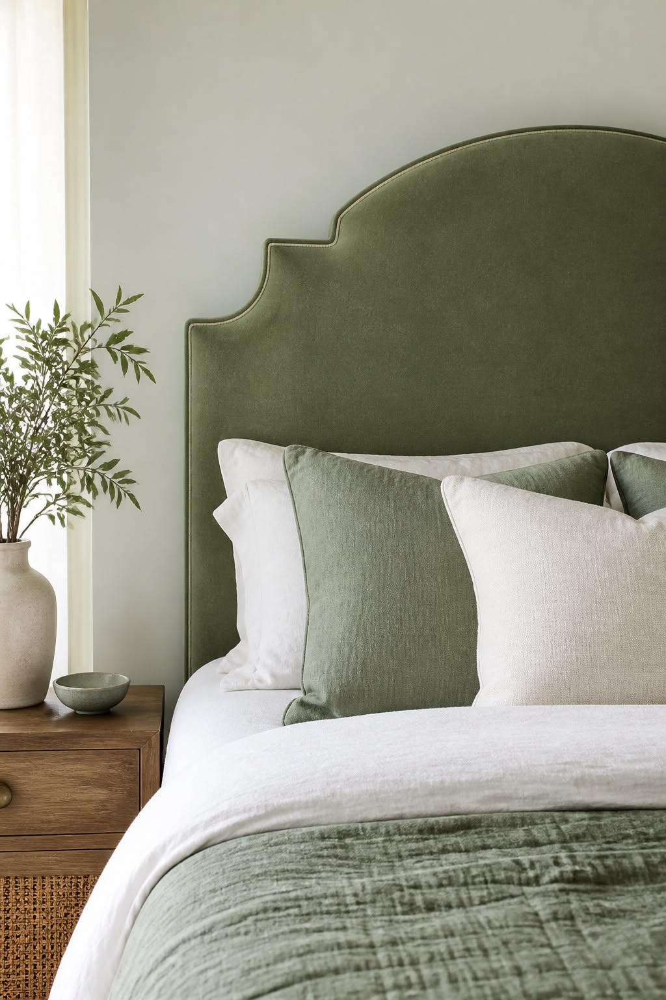
9-Piece Green Linen Upholstered Headboard Queen Size, Wall Mounted Tufted Headboard, Serene Fabric for Relaxing Bedroom
Shop on Amazon13. Try a Sage Green and Dusty Blue Palette
If you prefer cooler bedrooms, pair sage with dusty blue instead.
Both colors have a soft, muted quality, so they can create a calm palette without looking flat. Use sage on the walls and dusty blue through pillows, artwork, or a throw.
Keep your larger furniture pieces neutral to prevent the palette from becoming too colorful overall.
Jepeak Decorative Chenille Throw Pillow Covers 18x18 Pack of 2 Dusty Blue
Shop on AmazonZWJD Dusty Blue Pillow Covers 18x18 Set of 2 Chenille Throw Pillow Covers with Elegant Design Soft and Luxurious Decorative Throw Pillows for Couch, Bed, and Home Decor
Shop on Amazon14. Create a Sage Green Cottage Bedroom
Sage green practically begs for cottage styling.
Combine it with painted wood furniture, vintage artwork, floral fabrics, woven baskets, and soft white bedding.
I'd also add one imperfect-looking antique piece. Perfectly matched furniture can make a cottage bedroom feel like a showroom, and nobody wants their bedroom to look like it has never experienced real life.
Large Framed 3 Piece Vintage Botanical Wall Art for Living Room, 20x30 In
Shop on AmazonWRFON Framed Botanical Canvas Wall Art Set of 3, Watercolor Floral Prints, Framed Flower Wall Decor for Bedroom Bathroom Living Room, 12x16 Inch Each
Shop on Amazon15. Combine Sage Green With Black Accents
Black can make sage green look surprisingly sophisticated.
Try black through:
- Bed frames
- Pendant lights
- Curtain rods
- Picture frames
- Small furniture pieces
The key involves restraint. You want black to define the room rather than dominate it.
A sage wall with a black metal bed and cream bedding creates a clean modern sage green bedroom without feeling cold.
Kujielan 12 inches Queen Size Bed Frame with Minimalist Headboard, Black
Shop on AmazonSuperay 18 Inch Queen Size Metal Platform Bed Frame with Round Corners Leg
Shop on Amazon16. Use Sage Green Behind a Canopy Bed
A canopy bed already creates a strong focal point, so sage green makes an excellent backdrop for it.
Paint the wall behind the bed a medium sage and choose a natural wood or black canopy frame. Add white or cream bedding to soften the contrast.
Want the room to feel more romantic? Add sheer curtains around the canopy.
Achart Macrame Wall Hanging Large - Boho Wall Decor, Large Wall Art, Macrame Tapestry Boho Decor for Bedroom (Wooden Bead)
Shop on AmazonLarge Macrame Wall Hanging Boho Woven Tapestry Chic Home Decor Wall Art
Shop on Amazon17. Add Sage Green Floral Wallpaper
Sage green floral wallpaper can create a romantic bedroom without making the space feel overly traditional.
Look for designs with muted cream, beige, dusty pink, or brown details. Small-scale botanical patterns work well in compact bedrooms, while larger patterns can create a dramatic focal point.
I'd keep the furniture simple if you choose a busy wallpaper. Otherwise, the room can start competing with itself.

Sage Green Floral Peel and Stick Wallpaper 17.7" x 393.7"
Shop on Amazon18. Mix Sage Green With Terracotta
This pairing gives sage a completely different personality.
Terracotta introduces a warm, earthy contrast that prevents sage from feeling too cool. You don't need much, either.
Try terracotta through:
- A ceramic lamp
- Accent pillow
- Small artwork
- Bed throw
- Decorative vase
Keep the larger elements neutral and let terracotta act as the warm punctuation mark on top.

Jeneoo Terracotta Decorative Throw Pillow Covers Soft Chenille Comfy Solid Rust Couch Cushion Case Decor (Set of 2, 18 x 18 Inches)
Shop on AmazonZWJD Rust Throw Pillow Covers 18x18 Set of 2 Chenille Fall Pillow Covers with Elegant Design Soft and Luxurious Decorative Throw Pillows for Couch, Bed, and Home Decor
Shop on Amazon19. Create a Sage Green and Beige Bedroom
Sage green and beige create one of my favorite combinations for a cozy bedroom.
Beige warms the cooler qualities of green, while sage gives beige more personality. Add natural linen, rattan, woven baskets, and light wood for an earthy look.
If your room currently feels too gray, this combination can also help introduce warmth without forcing you into yellow or orange tones.
Ziqqeelam 2 Pack 11.8" Copper Pendant Light Kitchen Island Farmhouse Hanging Pendant Light Fixtures, Vintage Dome Pendant Lights Kitchen Island, Dome Chandelier for Kitchen Island Dining Room
Shop on AmazonWestinghouse Lighting 6105400 One-Light Indoor Mini Pendant, Hammered Copper Finish
Shop on Amazon20. Add Sage Green Board and Batten
Want a little architectural drama?
Paint board and batten molding in sage green and keep the upper wall a warm white. This technique gives you color while preserving plenty of visual breathing room.
It works particularly well in cottage, farmhouse, transitional, and English-inspired bedrooms.
You can also reverse the treatment by using sage on the upper wall and a slightly darker green on the molding itself.

Fixwal Floating Shelves for Wall Decor (Rustic Brown, Set of 2, 15.7 Inch)
Shop on Amazon21. Use Sage Green and White Bedding
You don't necessarily need sage walls to create a sage bedroom.
Keep the walls neutral and introduce sage through:
- Duvet covers
- Quilts
- Pillowcases
- Throw blankets
- Accent pillows
This approach works beautifully for renters or anyone who changes their decor frequently.
I especially like white linen bedding with one or two sage pillows. It keeps the room from looking overly coordinated.
MILDLY Duvet Cover Queen Ultra Soft Comforter Cover Set 3pcs, Mist Sage
Shop on AmazonJSD Sage Green Duvet Cover Set Queen Size
Shop on Amazon22. Pair Sage Green Walls With Natural Wood
Sage and wood make an easy partnership because both colors connect naturally with the outdoors.
Try pale oak for a Scandinavian-inspired room or walnut for something richer and more traditional. The contrast between the muted green and warm wood gives the room depth.
Certain green bedroom colors get described as fresh and grounding specifically for creating a restful retreat, and that grounding quality works especially well alongside organic materials like these.
8×10 Easy Jute Rug Washable Rugs Low Pile Outdoor Indoor Farmhouse Neutral Non Slip Rug Modern Carpet Door Mat for Backyard Bedroom Kitchen Porch Patio Nature
Shop on AmazonJute Cotton Hand Woven Area Rug (8' x 10' Natural)
Shop on Amazon23. Try a Soft Sage Green Bedroom With Cream
This combination rarely misses.
Soft sage walls with cream bedding create a warm, relaxed bedroom palette that feels much softer than pure white. Cream also helps bring out the warmer side of sage.
Add light oak nightstands, linen curtains, and a textured throw. You'll get that comfortable boutique-hotel feeling without needing to redecorate your entire life.
HAOBO Home Upholstered Queen Headboard Only, Modern Linen Panel Oatmeal
Shop on AmazonModway Emily Tufted Button Linen Fabric Upholstered Queen Headboard in Ivory
Shop on Amazon24. Create a Sage Green Accent Wall
Not ready to commit to an entire room? Start with the wall behind your bed instead.
A sage green accent wall naturally creates a backdrop for the headboard, artwork, and bedding. You can keep the remaining walls warm white or light beige for contrast.
I'd choose this approach if your bedroom receives limited natural light. You get the personality of green without making the entire room visually heavy.
upsimples 23.6" Long Floating Shelves for Wall, Room Decor Set of 2, Brown
Shop on Amazon
25. Paint the Entire Bedroom Sage Green
If you really love sage, why stop at just one wall?
Painting all four walls creates a soft, enveloping sage green bedroom that feels intentional rather than accidental. I particularly like this approach with muted, gray-based sage because the color creates atmosphere without overwhelming the furniture.
Pair the walls with warm white bedding and natural wood furniture. Add a woven rug underneath the bed to introduce another layer of texture.
Calma Solid Wood Nightstand 1-Drawer, Mid Century Modern Side Table, Walnut
Shop on AmazonNathan James 32704 Harper Mid-Century Oak Wood Nightstand with 2-Drawers, Small Side End Table with Storage, Brown
Shop on AmazonWhat Colors Go With Sage Green in a Bedroom?
Sage green gives you plenty of flexibility because you can push it warm, cool, earthy, traditional, or modern depending on what you put around it.
For a warm sage green bedroom, I'd reach for:
- Creamy white
- Warm beige
- Natural linen
- Taupe
- Light oak
- Walnut
- Terracotta
- Muted brass
Touch Table Lamps Set of 2, 21" Bedside Lamps with USB C+A, Gold
Shop on AmazonGold Table Lamps Set of 2, 16.4" Bedside Lamps for Nightstand with USB C+A
Shop on AmazonFor a cooler sage green bedroom, try:
- Soft white
- Pale gray
- Dusty blue
- Charcoal
- Matte black
- Soft blue-green
It's worth considering your bedroom's lighting and size before choosing a color, since light can dramatically change how paint actually appears once it's on the wall. Lighter colors tend to make small rooms feel more open, while darker colors can create a cozier, more intimate atmosphere instead.
That advice matters with sage more than people realize. A green that looks soft and creamy in a sunny bedroom can look considerably grayer in a north-facing room.
So before committing to five gallons of paint, sample the color. Future-you will appreciate it.
L'AGRATY Chunky Knit Throw Blanket for Couch, 50'' x 60'' Knit Throw, Ivory
Shop on AmazonBigacogo Chunky Knit Throw Blanket for Couch, 40x60 inches, Beige
Shop on AmazonIs Sage Green a Good Color for a Bedroom?
Absolutely, and the reason goes beyond the fact that sage green happens to look gorgeous on Pinterest.
Sage sits between green, gray, and sometimes a little blue or yellow depending on the shade. That muted quality makes it easier to live with than brighter greens. It adds personality while still behaving like a neutral.
Sage tends to get described as a color that brings a kind of nature-infused tranquility and sophisticated charm to a space, soothing and tranquil enough to create a genuinely peaceful retreat in almost any home.
I agree with the general idea, especially when you choose a muted sage rather than a saturated green. I've found that gray-green shades tend to look particularly sophisticated with cream bedding, natural wood, linen, and aged brass.
And honestly, bedrooms don't need another color that screams for attention. Your alarm clock already handles that job.
5Ft Artificial Fiddle Leaf Fig Tree Indoor for Home Decor
Shop on AmazonArtificial Fiddle Leaf Fig Tree with White Planter, 5ft Tall Fake Tree with Natural Wood Trunk for Home Decor, Faux Ficus Tree Fake Moss for Indoor Office Living Room
Shop on AmazonFinal Thoughts on Sage Green Bedroom Ideas
The best sage green bedroom ideas don't rely on paint alone. The color works because it gives you a flexible foundation for layering warm neutrals, natural wood, soft textiles, earthy accents, and darker contrast.
You can go light and airy with sage and cream. You can create a cozy cottage bedroom with sage and floral patterns. You can make it dramatic with dark wood and black accents. Or you can keep things incredibly simple with pale sage walls, linen bedding, and a few beautiful pieces.
The most important thing? Choose your sage based on your actual room, not just a pretty picture online.
Look at your natural light. Check the undertones. Sample the paint. Then build the rest of the room around the version of sage that actually works in your space.
And if you're still staring at five nearly identical green paint chips wondering why they all suddenly look different, welcome to decorating. We've all been there.